Drawn 22 Nov 26 on the real app, at a desktop's size and at your iPhone's. Tap any picture to see it full size.
The one question. When a weekend's only work is an input nobody gave an OIL answer for, how should the day and the publish tell you that nobody earns OIL?
Recommended: A. One red line in the day's warning list, with an "Answer OIL" button, and the same words in the note after you publish. See A · See B
The example: Saturday 18 Jul holds only Ranger's Training, 08:00 to 17:00. Nobody answered its OIL question. The four sign, you press Publish day, and the app says only "Saturday published and approved". The day's warning list says there is nothing wrong. Ranger works nine hours on a Saturday and earns no OIL, and nothing on the day says so. Only the "OIL?" tag on the Inputs page and his own bell show it.
When a desk has no times, the app already says so on the day and in the publish note ("The Common Programme has no usable times, so nobody on it earns OIL."). An unanswered question gets no such line.
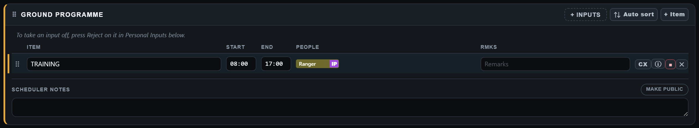
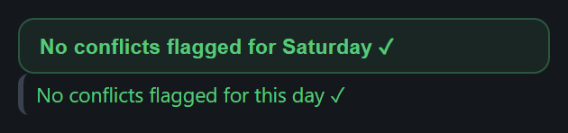
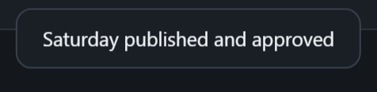
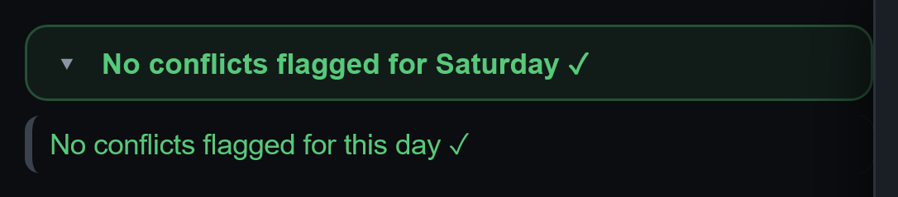
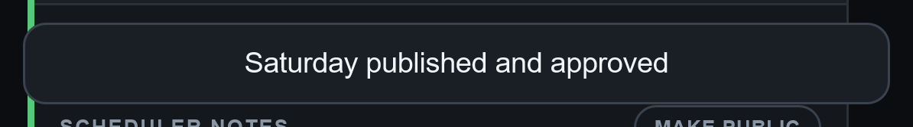
The day's warning list gets one red line, drawn like the line the app already shows for a desk with no times. Its button opens the day's list of open OIL questions, the same list a holiday opens. After you publish, the note says the same thing.
The line: Ranger — Training has no OIL answer, so nobody on it earns OIL for this day
and the button Answer OIL
The line's heading on Edit Schedule's week: No OIL earned — an input has no OIL answer
(next to today's No OIL earned — a row has no usable times
)
The publish note: Saturday 18 Jul published and approved. Ranger's Training has no OIL answer, so nobody on it earns OIL.
With several people on the input, the line names them all, as it does today. With several inputs, each gets its own line.
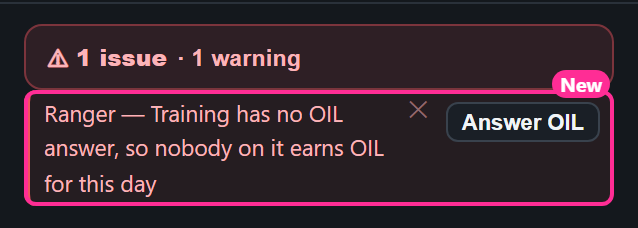
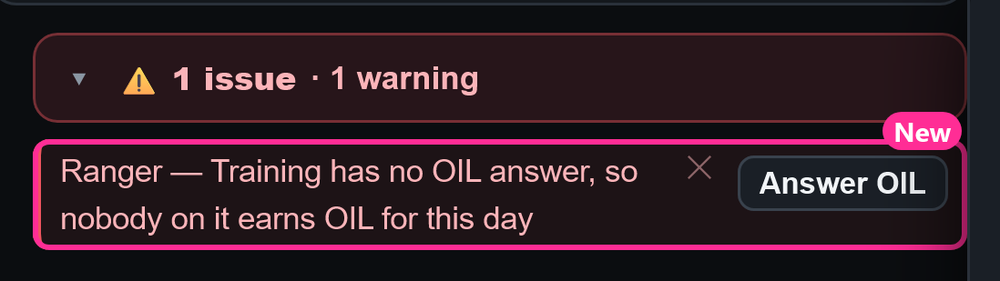
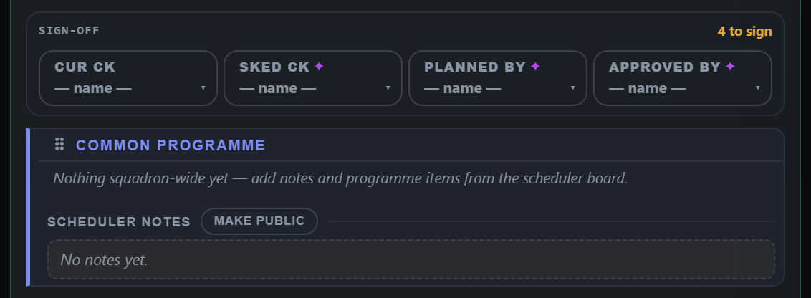
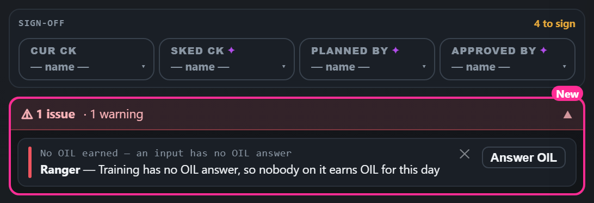
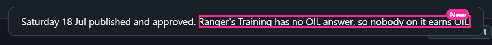
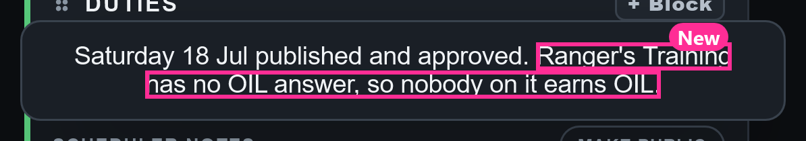
Why A:
What it costs: pressing "Answer OIL" after the day is published has the same cost as in B. The day goes back to pending and needs four signatures and Publish AL1 (picture B3).
Today this list opens by itself when a day becomes a holiday, or when loading a version or switching to a saved plan brings back an input with no answer. With B, publishing would open it too. Drawn after the publish goes through. Drawing it before the publish would not work: the four signatures cover the day's OIL answers. An answer given at that point changes what they signed, so the publish would stop and wait for four new signatures anyway.
A line at the top of the list: Saturday 18 Jul published and approved. 1 input has no OIL answer, so nobody on it earns OIL yet.
A line at its foot, beside Later and Save: An answer makes Saturday pending again: it needs signing and publishing once more
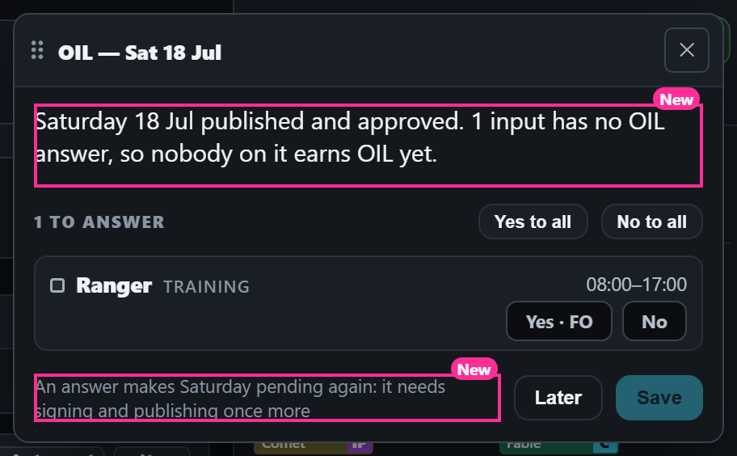
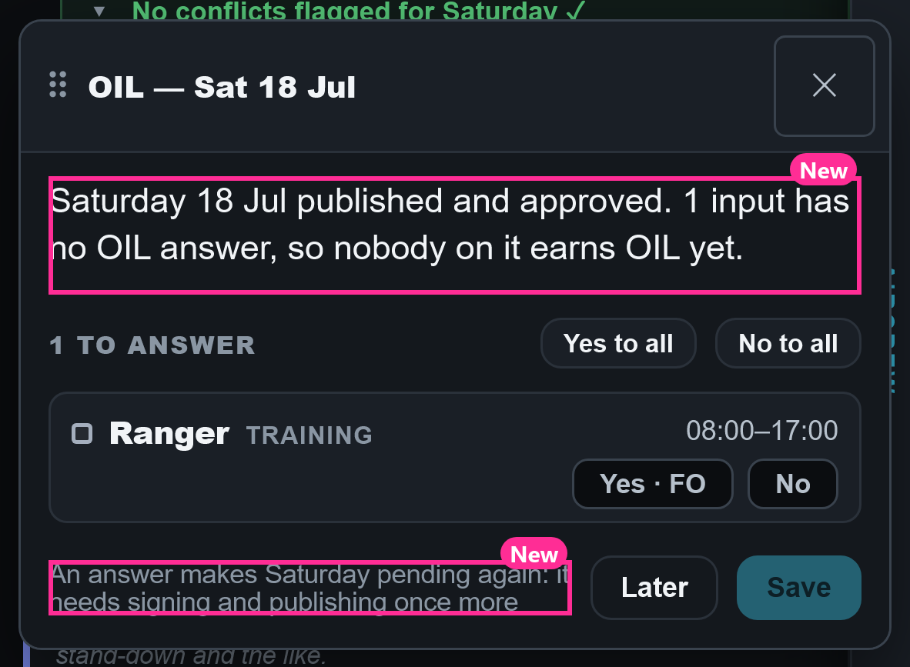
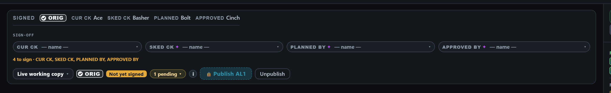
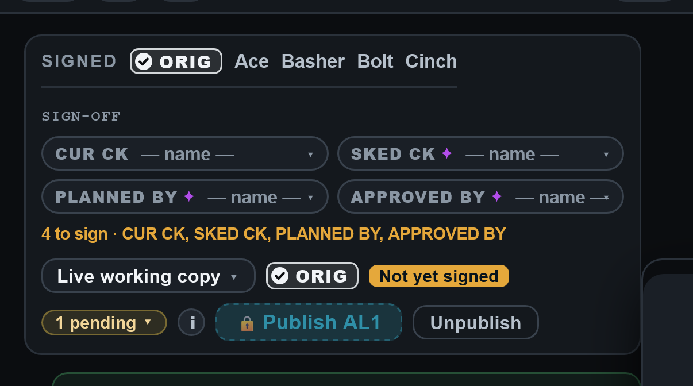
Why not B:
Which pictures are real: those marked "Real" are the app exactly as it draws itself. Those marked "Drawn in" are the real screen with only the pink-outlined part added or changed. The pink outline and the "New" tag are not part of the design. The Saturday was set up with only this one input, put in directly, because every way of filing one in the app asks the OIL question straight away. Everything else (signing, Publish day, opening the list, the answer) was done by pressing the app's own buttons.